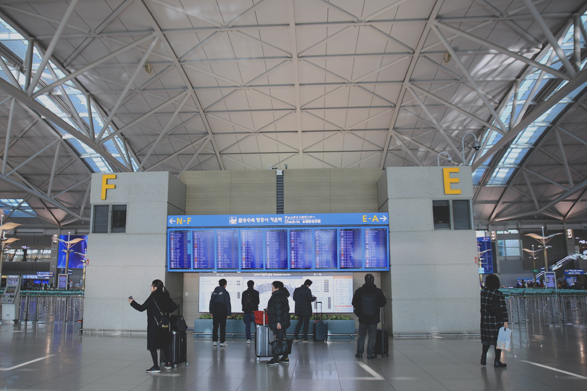
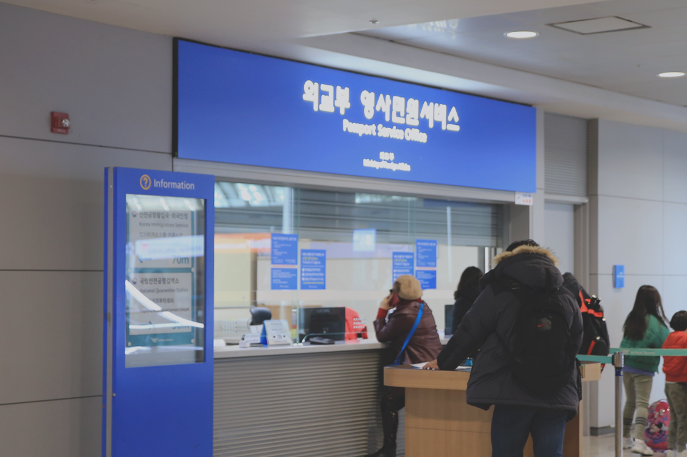
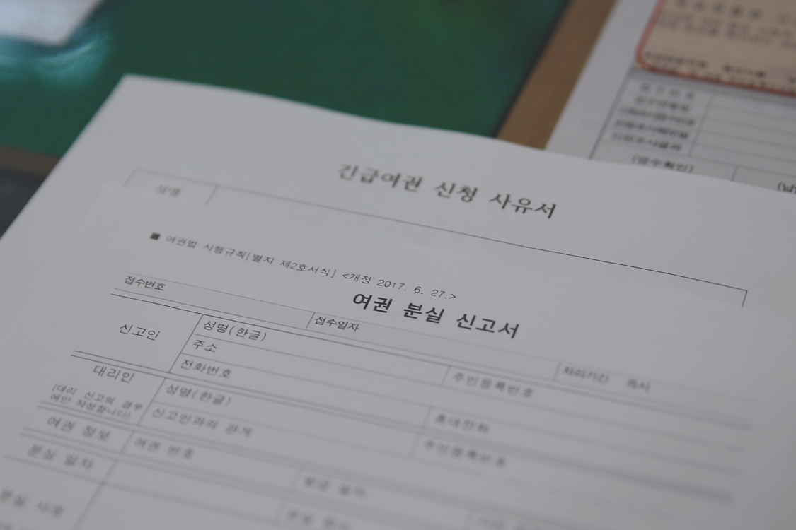

공항은 여행의 설렘과 동시에 긴장감 또한 늦출 수 없는 장소입니다. 미리 확인하고 제대로 준비하면 다행이지만 현실은 내 맘처럼 되지 않는 아찔한 순간의 연속입니다.
항공권 구매시에는 문제가 없었는데 출국하려고 보니 여권이 훼손된 경우, 여권 만료 유효기간의 날짜가 모자라는 경우 등 출발 당일 여권에 문제가 생긴 경우 인천 공항에서 긴급 여권을 발급받을 수 있는 서비스가 있습니다.
단, 긴급 여권 발급에는 자격조건이 필요합니다.
1. 어디서 받을 수 있나요?
인천공항 긴급 여권발급 서비스는 제1터미널, 제2터미널 여권 민원센터에서 담당하고 있습니다. 인천공항에서만 제공되는 민원서비스입니다.
긴급여권은 가족이 해외에서 사고를 당했거나 업무상 급히 출국해야 하는 등 긴급성이 인정되는 경우에만 발급이 가능합니다. 단순 관광 여행은 긴급 여권 신청 시 거절 될 확률이 높습니다.
신청요건: 여권의 자체결함(신원정보지 이탈 및 재봉선 분리 등) 또는 여권사무기관의 행정착오로 여권이 잘못 발급된 사실을 출국이 임박한 때에 발견하여 여권 발급이 필요한 경우 인도적 사유로서 급히 출국할 필요가 있다고 인정되는 경우 (예: 가족 사망, 사건사고)
미리 민원센터에 전화해서 상황설명 후 발급이 가능한지를 확인하고 방문하는 것이 좋습니다.
2. 긴급 여권 발급 시 필요한 서류
발급 신청은 인천공항 제1여객 터미널 3층 출국장 F카운터 외교부 영사민원센터와 제2여객터미널 2층 중앙에 있는 정부종합 행정센터 내 외교부 영사 민원센터에서 할 수 있습니다. 방문하기전 아래 서류를 미리 준비하세요!
여권사진을 갑자기 어디서 구하지? 서비스 센터 앞쪽에 사진촬영 부스가 준비되어 있습니다. 10,000원이면 빠르게 여권사진을 준비할 수 있습니다.
또한 항공 예약사항 등 긴급함을 증명할 증빙서류는 모두 문서로 제출해야 하는데요. 이때 인천공항내 위치한 ‘커피앳윅스’ 라는 카페에서 노트북 사용과 출력 서비스를 이용할 수 있습니다.
준비된 서류와 사진을 들고 서비스센터 안에 들어가면 3가지 항목에 대해 서류를 작성하게 됩니다. 작성 후 발급까지 걸리는 시간은 1시간 30분~2시간 정도 소요됩니다. 대기까지 생각하고 여유롭게 방문해주세요!
3. 긴급 여권 발급 시 이거 주의하세요!
긴급여권은 전자여권이 아닌 종이 여권입니다. 미국, 베트남 등 무비자 입국 시 전자여권이 필수인 나라에서는 입국을 거부당할 수 있으니 여행지 정보를 확인하세요!
긴급여권은 기존 여권과 다른 여권번호로 발급됩니다! 미리 예약해둔 항공권, 호텔은 영문 이름의 스펠링이 동일하면 상관이 없다고 합니다. 하지만 면세점 물품의 경우 수령하는데 문제가 생길 수 있으니 이 부분 주의하시기 바랍니다!
긴급여권은 기한이 1년으로 나오지만 1회용이기 때문에 여권은 새로 발급해야 합니다.
여행 시작부터 긴급여권을 이용하는 아찔한 일은 없으면 좋겠습니다. 항공권부터 호텔까지 지불해야할 취소 수수료가 가득하니까요 ㅠㅠ! 미리미리 여권 유효기간 만료일, 훼손 정보 등을 확인하고, 집을 나서는 그 순간까지도 잘 챙겼는지 확인한다면? 즐거운 여행이 시작될 수 있을거에요😊